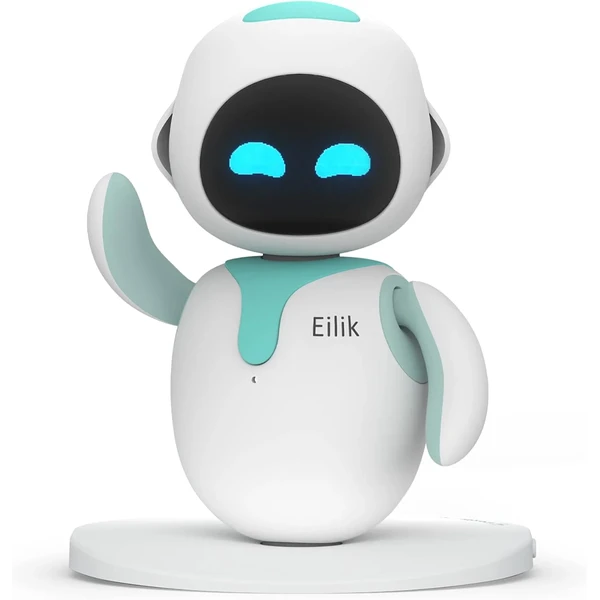
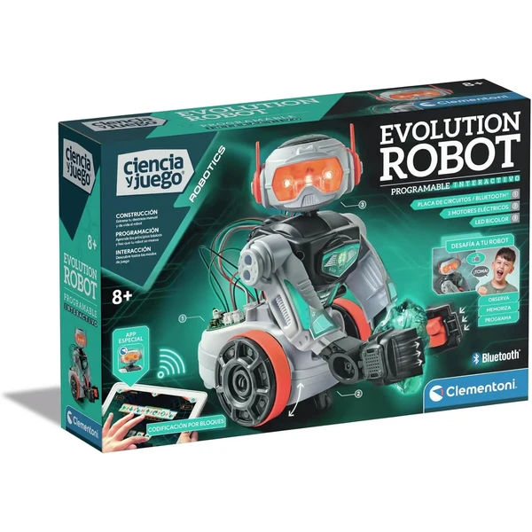
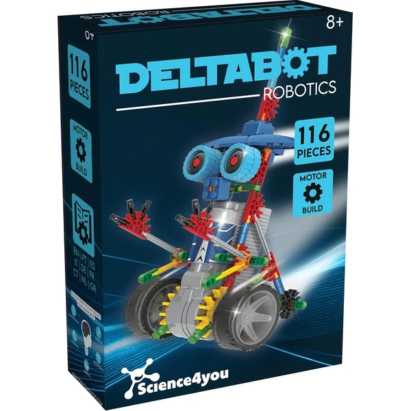
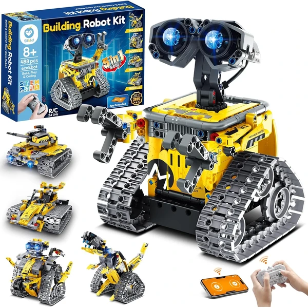
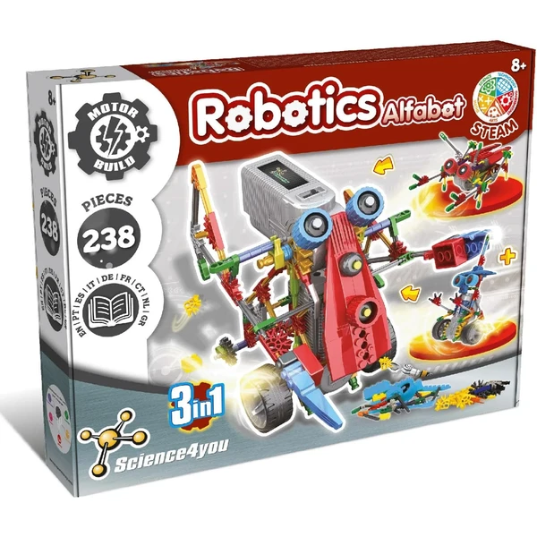
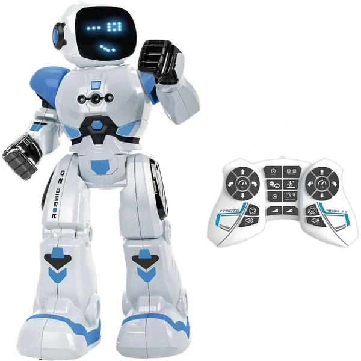

Eilik Robot Mascota de Escritorio
Un robot compañero con personalidad propia que interactúa mediante gestos, sonidos y pequeñas animaciones. Reacciona de forma distinta según cómo se le trate, como si tuviera un carácter propio.
⭐ ¿Por qué nos gusta?
- ✔ Interactúa con gestos y expresiones propias.
- ✔ Se actualiza con nuevo software constantemente.
- ✔ Reacciona de forma distinta según cómo se le trate.
💬 Lo que más destacan las familias
Muchos padres coinciden en que sorprende lo mucho que parece tener personalidad propia, casi como una mascota real. También se valora que reciba actualizaciones que añaden comportamientos nuevos con el tiempo.
Ver en Amazon

Science4you Robotics Betabot
Un kit de 126 piezas para construir un robot que se mueve gracias a un pequeño motor incorporado. Incluye libro educativo en varios idiomas para guiar el montaje paso a paso.
⭐ ¿Por qué nos gusta?
- ✔ 126 piezas para construir un robot funcional.
- ✔ Motor incorporado que hace que se mueva.
- ✔ Combina construcción y robótica educativa.
💬 Lo que más destacan las familias
Entre los comentarios más habituales aparece lo satisfactorio que resulta ver moverse el robot tras haberlo montado con las propias manos. Es un buen punto de partida para quienes se inician en la robótica.
Ver en Amazon

Clementoni Evolution Robot 2.0
Un robot programable con app propia, sensores infrarrojos y brazos móviles capaces de levantar pequeños objetos. Incluye motores eléctricos y luces LED para completar la experiencia.
⭐ ¿Por qué nos gusta?
- ✔ Se controla y programa desde una app.
- ✔ Brazos móviles para levantar objetos.
- ✔ Sensores infrarrojos y luces LED integradas.
💬 Lo que más destacan las familias
Una de las cosas más comentadas es lo completo que resulta para introducirse en la programación básica desde la propia app. Los brazos móviles también se mencionan como un detalle que sorprende gratamente.
Ver en Amazon

Science4you Robotics Deltabot
Un kit de 117 piezas para construir un robot que se mueve gracias a un motor incorporado, con libro educativo en varios idiomas. Combina construcción manual y resultado interactivo.
⭐ ¿Por qué nos gusta?
- ✔ 117 piezas para construir un robot funcional.
- ✔ Motor incorporado que hace que se mueva.
- ✔ Libro educativo en varios idiomas.
💬 Lo que más destacan las familias
Se repite bastante el comentario de que combina bien el montaje manual con el resultado de un robot que realmente se mueve. Ideal para quienes disfrutan tanto de construir como de jugar después.
Ver en Amazon

Sillbird Robot 5 en 1
Un kit de 488 piezas para construir cinco modelos distintos: robot, dinosaurio, coche, tanque y más, con dificultad progresiva. Se controla por app o mando a distancia según se prefiera.
⭐ ¿Por qué nos gusta?
- ✔ Cinco modelos distintos con las mismas piezas.
- ✔ Se controla por app o por mando.
- ✔ Dificultad progresiva según el modelo elegido.
💬 Lo que más destacan las familias
Lo que más suele gustar es poder elegir entre varios modelos distintos según el nivel de reto que se busque. También se valora tener dos formas de control, con app o con mando, según el momento.
Ver en Amazon

Science4you Robotics Alfabot
Un kit de 238 piezas para construir un robot propio y ponerlo en marcha después. Incluye un extenso manual ilustrado para aprender robótica y electrónica paso a paso.
⭐ ¿Por qué nos gusta?
- ✔ 238 piezas para un robot más elaborado.
- ✔ Manual ilustrado para aprender robótica.
- ✔ Combina construcción y electrónica básica.
💬 Lo que más destacan las familias
Una característica muy mencionada es lo detallado del manual, que ayuda a entender no solo cómo montar sino también por qué funciona cada pieza. Se recomienda para niños con curiosidad ya despierta por la ciencia.
Ver en Amazon

IKUPER Robot 6 en 1
Un set de 631 piezas que se puede montar en seis modelos distintos de robot, controlados por app o mando a distancia de largo alcance. Incluye luces que cambian según la dirección del movimiento.
⭐ ¿Por qué nos gusta?
- ✔ Seis modelos de robot distintos.
- ✔ Control por app o mando a distancia.
- ✔ Luces que cambian según la dirección.
💬 Lo que más destacan las familias
No es raro encontrar comentarios sobre lo mucho que da de sí tener seis modelos distintos en un mismo set. También se valora el alcance del mando, que permite jugar en espacios más amplios.
Ver en Amazon

Xtrem Bots Robbie
Un robot programable con hasta 50 movimientos y 20 expresiones faciales distintas, que se controla también con gestos de la mano. Incluye modo baile y desplazamiento en dos velocidades.
⭐ ¿Por qué nos gusta?
- ✔ Hasta 50 movimientos programables.
- ✔ Se controla también con gestos.
- ✔ 20 expresiones faciales distintas.
💬 Lo que más destacan las familias
Un detalle que aparece una y otra vez es lo mucho que gustan las expresiones faciales del robot, que le dan un aire más cercano. El control por gestos también se valora como una forma novedosa de manejarlo.
Ver en Amazon